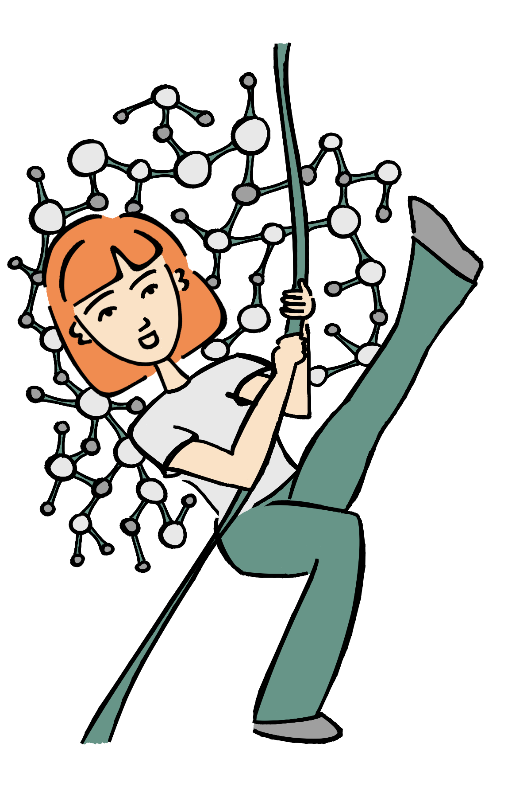
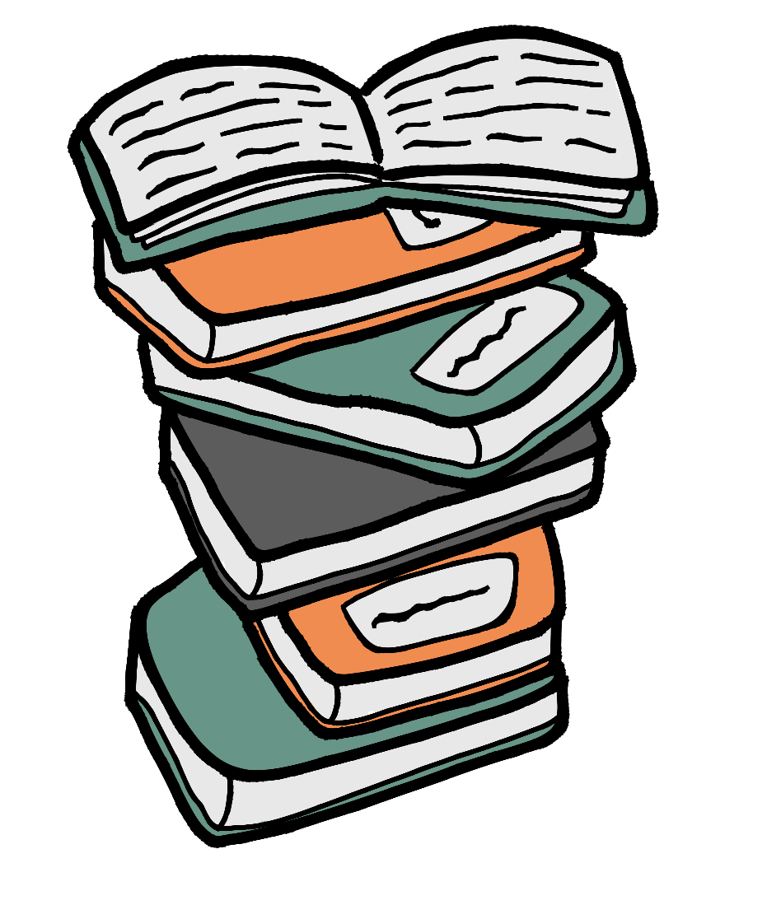
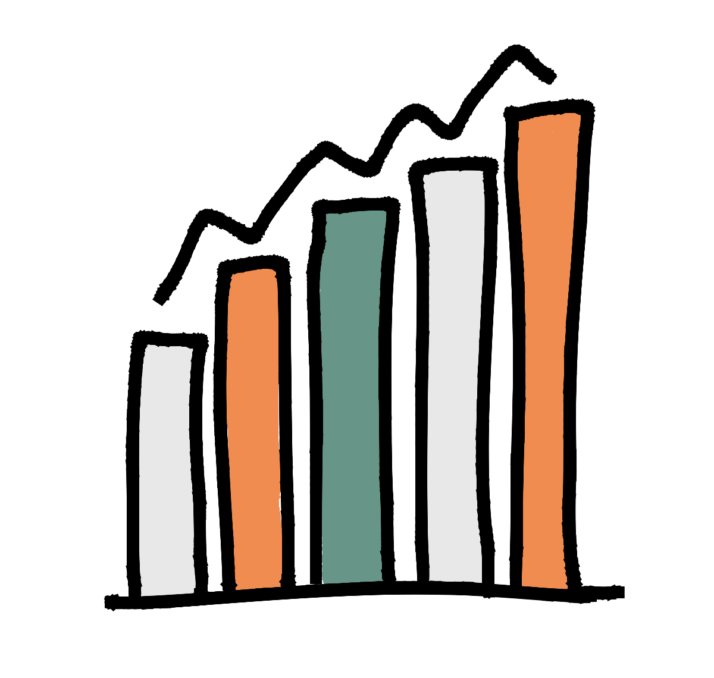

Data Literacy Education mittels Storytelling
Toolbeschreibung

Im Rahmen des Projektes Data Literacy Skills für angehende Pädagog:innen – gefördert durch das Programm Curriculum 4.0.nrw – entsteht an der Universität Bielefeld der Onlinekurs Mit Emma durch den Datendschungel. Konzeptionell orientiert sich das Lehr-Lernformat an dem Datenlebenszyklus (Wolf & Leppla, 2020) und hat zum Ziel, Studierenden der Erziehungswissenschaft und der Bildungswissenschaften in sechs Modulen Data-Literacy-Skills nach Ridsdale et al. (2015) zu vermitteln. Das Projekt soll dazu beitragen, Studierende für zunehmend datenbezogene Aufgaben und Anforderungen in pädagogischen Arbeitsfeldern (zum Beispiel Bildungsmonitoring) zu qualifizieren.
Didaktisch basiert der Onlinekurs auf der Methode des (digitalen) Storytellings. Beim digitalen Storytelling werden Geschichten mithilfe von interaktiven Medien produziert, die sich durch spezialisierte Computersoftware zusammenfügen lassen (Robin, 2016: 18). Im Projektkontext wird hierzu die kommerzielle Software Articulate Storyline zur Erstellung von E-Learning-Kursen genutzt. Grundlegend für die Methode des Storytellings ist die Annahme, „dass Geschichten einen emotionalen Zugang zu Lerninhalten schaffen“ (Nüssle et al., 2017: 39). In diesem Zusammenhang begleiten die Studierenden im Onlinekurs ihre fiktive Kommilitonin Emma auf dem Weg durch den „Dschungel der Daten“. Die darin enthaltene Story ist als Dialog zwischen Emma, ihrer Dozentin und den Studierenden als Rezipient:innen angelegt und wird über den Onlinekurs vermittelt, der sich in das Learning Management System (LMS), zum Beispiel Moodle, integrieren lässt. Studierende können somit über das LMS auf den Kurs und die Kursinhalte zugreifen.

Insgesamt sollen die Studierenden durch die Kursteilnahme dazu befähigt werden, eine empirische Abschlussarbeit zu verfassen (hier: quantitative Sekundäranalyse von ALLBUS-Daten (Allgemeine Bevölkerungsumfrage der Sozialwissenschaften)). Anhand von R-Markdown-basierten und als Bookdown zur Nachnutzung veröffentlichten Tutorials wird den Studierenden ermöglicht, Kenntnisse über Grundlagen der Datenanalyse und -auswertung zu erlernen. Ziel ist mitunter, Wissen zur Auswahl, Aufbereitung und Auswertung von Daten zu vermitteln sowie Hinweise zum wissenschaftlichen Arbeiten bereitzustellen (unter anderem zur Literaturrecherche, zum Aufbau einer empirischen Arbeit sowie zur Zitation und Darstellung nach den APA-Standards). Ergänzend erhalten die Studierenden Informationen über hochschulinterne sowie -externe Unterstützungsangebote (zum Beispiel Schulungen der Unibibliothek, Instrumentendatenbanken über den Verbund Forschungsdaten Bildung).
Voraussetzungen & Zielgruppen
Das Storytelling als Wissensmanagement-Methode erfordert insbesondere personelle und zeitliche Ressourcen (Reinmann-Rothmeier et al., 2000: 4). Im beschriebenen Projekt können die Auswahl und Aufbereitung der zu vermittelnden Lerninhalte, die Einbettung in eine Story sowie die Anfertigung eines Skripts als besonders voraussetzungsreich und arbeitsintensiv beurteilt werden. Zur Erstellung einer digital vermittelten Story ist zudem eine entsprechende technische Infrastruktur vonnöten. Darüber hinaus sind für eine narrative Vermittlung von Wissen zugleich fachliche Expertise (hier: Wissen zum Umgang mit Daten) und eine grundlegende narrative Kompetenz, wie sie bereits bei Schütze (1977) beschrieben wird, erforderlich. Dies schließt auch die Bereitschaft ein, sich in Form einer „kollektiven Reflexion“ (Thier, 2017: 26) über die auszuwählenden Inhalte, die damit verbundenen Erfahrungswerte und über einen erzählerisch kohärenten Projektablauf zu verständigen (Reinmann-Rothmeier et al., 2000: 4–5; Thier, 2017: 28).
Während das Storytelling als Wissensmanagement-Methode vor allem in Unternehmen und kulturellen Einrichtungen eingesetzt wird, adressiert das vorgestellte Hochschulprojekt primär Lehrende und Studierende in den erziehungs- und bildungswissenschaftlichen Studiengängen: Zum einen lassen sich die entwickelten Selbstlerneinheiten von Hochschullehrenden nutzen, um die Präsenzlehre digital zu unterstützen und zu begleiten, zum anderen ist es das Ziel, dass sich die Studierenden selbstorganisiert die Lerninhalte über die Lernumgebung aneignen. Hierbei besteht die Annahme, dass der niedrigschwellige und authentische Zugang, der an das situierte Lernen (Mandl et al., 1995) anschließt, ein besonderes Potenzial für selbstgesteuerte Lernprozesse bietet (Reinmann & Mandl, 2006).
Der Onlinekurs ist daher so konzipiert, dass er zum einen eine Einführung in den Umgang mit Daten (zum Beispiel zu Beginn des Studiums) bietet und zum anderen auch als Wiederholung (zum Beispiel beim Übergang vom Bachelor- in das Masterstudium) dienen kann. Insbesondere für Studierende, die eine eigene Forschungsarbeit planen, soll die Begleitung durch Emma, die ebenfalls ein solches Projekt plant und durchführt, eine Unterstützung sein.
Der Umgang mit Daten lässt sich hierbei anhand der ALLBUS-Daten veranschaulichen, da diese für Analysezwecke gut aufbereitet und leicht zugänglich sind sowie eine Vielzahl sozialwissenschaftlicher Themenfelder abdecken. Der hier vorgestellte Onlinekurs fokussiert sich auf das politische Interesse, woraus sich Implikationen für die politische Bildung ableiten lassen. Darüber hinaus wird Bezug auf weitere Daten genommen, die in pädagogischen Berufsfeldern erhoben werden (zum Beispiel durch Beobachtungsbögen des Jugendamtes, Teilnahmestatistiken der VHS).
Kompetenzen

Zweck des Onlinekurses ist es, Unterstützung für die Durchführung eigener empirischer Projekte sowie für den Umgang mit Daten zu bieten. Dabei sollen Data-Literacy-Skills entlang des Data Life Cycle vermittelt werden. Der Data Life Cycle besteht aus sechs Schritten: (1) Planung, (2) Datensammlung, (3) Datenanalyse, (4) Veröffentlichung, (5) Nachhaltigkeit von Daten und (6) Wiederverwendung von Daten (Wolf & Leppla, 2020). Die Lerninhalte, die im nächsten Abschnitt dargestellt werden, orientieren sich am Kompetenzrahmen nach Bush et al. (2021), der als Teil des Projektes DataLiteracySkills@OWL entstanden ist. Zentral sind dort die Kompetenzbereiche Lesen und Verstehen (unter anderem grundlegende Kenntnisse über Daten und Datenerhebung), Reflexion (zum Beispiel Beachten des Datenschutzes, Einordnung in den gesellschaftlichen Kontext) und Gestaltung (zum Beispiel Durchführung und Reflexion eigener Datenanalysen). Zudem wird zwischen drei Anforderungsebenen unterschieden, auf denen der jeweilige Kompetenzbereich erreicht werden soll: Reproduzieren, Zusammenhänge herstellen und Transfer (Bush et al., 2021). Die genannten Kompetenzbereiche werden im Rahmen des Onlinekurses mit Bezug auf pädagogische Themenfelder adressiert, um die Relevanz von Data Literacy für die eigene Berufspraxis zu verdeutlichen (zum Beispiel Einbettung der Inhalte in einen gesellschaftsrelevanten Kontext, hier: politisches Interesse).
Lerninhalte & Methoden
Nach Thier (2017) stellt das Storytelling eine Methode dar, „mit der (Erfahrungs-)Wissen […] erfasst, ausgewertet und in Form einer gemeinsamen Erfahrungsgeschichte aufbereitet wird“ (Thier, 2017: 21). Insofern wird Storytelling das Potenzial zugeschrieben, den Transfer von (Erfahrungs-)Wissen zu unterstützen und damit auch schwer zugängliches Wissen wie beispielsweise implizite Wissensbestände offenzulegen.
Die Konzeption und Erstellung einer digital aufbereiteten Story beinhaltet in Anknüpfung an Ohler (2013) und Çetin (2021) die folgenden fünf Schritte: Planung, Schreiben eines Skriptes, Erstellung eines Storyboards, Sammlung notwendigen Materials, finale Erstellung der Story und Evaluation. Vor diesem Hintergrund wurden im Rahmen des genannten Projektes zunächst die zu vermittelnden Inhalte entlang des Data Life Cycle (Wolf & Leppla, 2020) festgelegt und skizziert. Daraufhin folgten eine differenzierte inhaltliche Ausarbeitung sowie die Einbindung in eine modular aufgebaute Story. Parallel zur inhaltlichen und narrativen Ausgestaltung sowie im Anschluss an die genannten Schritte standen der Entwurf eines Storyboards sowie die Recherche und Sammlung notwendigen Materials (unter anderem Literatur, Datensätze, Merkblätter) im Vordergrund. Die finale Story wurde abschließend mit der genannten Software Articulate Storyline erstellt. Eine Evaluation des Kurses und der darüber vermittelten Story steht noch aus.
Insgesamt trägt das narrative Darstellungsformat dazu bei, Wissenselemente und damit verbundene Bedeutungskonstruktionen sowie Erfahrungen und Handlungen miteinander zu verknüpfen und in einer kohärenten Form (hier der Erfahrungsgeschichte) zu verdichten (Reinmann-Rothmeier et al., 2000; Thier, 2017; Woletz & Volkwein-Mogel, 2020). Innerhalb des Projektes werden hierzu sowohl fachliche Inhalte (wie beispielsweise Datenformen, Analysetools, Deskriptiv- und Inferenzstatistik, Möglichkeiten der Visualisierung) als auch emotionalisierende Elemente (zum Beispiel Ich-Erzählung, Thematisierung von Herausforderungen durch die Protagonistin Emma, unter anderem bei dem Einlesen eines Datensatzes und der korrekten Anwendung statistischer Verfahren), Erfahrungswissen (beispielsweise persönliche Tipps und Hinweise) und interaktive Formate (unter anderem Quiz, Suchbilder, Dialogszenen) innerhalb einer Erfahrungsgeschichte (das Verfassen einer datengestützten Abschlussarbeit) miteinander verwoben [Woletz & Volkwein-Mogel (2020): 77; Nüssle et al. (2017): 41; Friedmann (2019): 6).
Die zu transportierenden Inhalte innerhalb der Story orientieren sich an vorab definierten Lernzielen, die sich aus dem Kompetenzrahmen (Bush et al., 2021) und dem Data Life Cycle ableiten lassen. Folgende Themenschwerpunkte werden unter anderem berücksichtigt:
- Was sind Daten und welche Formen von Daten lassen sich unterscheiden?
- Welche Relevanz haben Daten für den Alltag und für pädagogische Berufsfelder?
- Welche datenschutzrechtlichen Aspekte sind zu beachten?
- Welche Visualisierungsformen gibt es und was zeichnet ein gutes Diagramm aus?
- Wie kann ich meine Fragestellung anhand von Hypothesentestungen beantworten?
- Wie erfolgt die Rückbindung der Befunde an die Fragestellung und den Forschungsstand?
- Welche Limitationen weisen Umfragedaten auf?
Die Story greift unter anderem die hier vorgestellten Inhalte in einer chronologisch sinnvollen und erzählerisch kohärenten Handlungsabfolge auf (Thier, 2017: 9; Friedmann, 2019) und verknüpft somit inhaltlich komplexe Themenbereiche wie das Konzept der Signifikanz oder die statistische Datenanalyse mittels RStudio mit einer lebensweltnahen und anwendungsbezogenen Perspektive.
Erkenntnisse & Erfahrungen
Perspektivisch soll der Onlinekurs in der erziehungswissenschaftlichen Methodenlehre eingesetzt und im Curriculum verankert werden. Geplant ist zudem, die Nutzung mittels quantitativen und qualitativen Evaluationsdesigns (zum Beispiel Fragebögen, Think-Aloud-Interviews) wissenschaftlich zu begleiten.
Für die Erstellung einer digital aufbereiteten Story können zudem die folgenden Tipps hilfreich sein:
- Für die konzeptionelle und technische Umsetzung sind vor allem zeitliche und finanzielle Ressourcen einzuplanen sowie fachliche und digitale Kompetenzen.
- Die inhaltliche Ausgestaltung sollte sich sowohl an der Lebenswelt der Lernenden als auch an curricularen Vorgaben orientieren.
- Die Integration in eine Story und die damit verbundene Überführung in ein digitales Format stellen ebenfalls ressourcenintensive Arbeitsschritte dar.
- Es sollte frühzeitig geklärt werden, welche Softwarelösungen (zum Beispiel Articulate, H5P) infrage kommen und welche Möglichkeiten der Visualisierung (beispielsweise Erstellung von Icons, Figuren) als realisierbar erscheinen.
Hilfreiche Links
- Zu Articulate: https://articulate.com/
- Zu DataLiteracySkills@OWL: https://www.campus-owl.eu/projekte/dalis
- Zur Allgemeinen Bevölkerungsumfrage Sozialwissenschaften (ALLBUS): https://www.gesis.org/allbus/allbus
Autorinnenprofile
Dr. Pia Gausling studierte Erziehungswissenschaft (Bachelor und Master) an der Universität Bielefeld. Zurzeit ist sie als wissenschaftliche Mitarbeiterin an der Fakultät für Erziehungswissenschaft (Arbeitsgruppe Forschungsmethoden) der Universität Bielefeld tätig. Zu ihren Arbeits- und Forschungsschwerpunkten gehören Data Literacy Education in der Hochschullehre, außerschulische Kooperationen und Berufsorientierung. Aktuell befasst sie sich in zwei drittmittelgeförderten Projekten mit der Entwicklung und Konzeption digitaler Selbstlerneinheiten zur Förderung von Datenkompetenzen im Studium.
M. A. Yvonne Erhardt studierte Erziehungswissenschaft (Bachelor und Master) an der Universität Bielefeld. Zurzeit arbeitet sie als wissenschaftliche Mitarbeiterin in der Fakultät für Erziehungswissenschaft (Arbeitsgruppe Forschungsmethoden), ebenfalls an der Universität Bielefeld, mit dem Schwerpunkt Data Literacy Education und Methodenlehre in drei Projekten.
Förderhinweise: Das hier vorgestellten Projekt wird durch das Ministerium für Kultur und Wissenschaft des Landes Nordrhein-Westfalen in Kooperation mit dem Stifterverband in dem Programm „Curriculum 4.0.nrw“ gefördert.